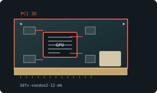

[ EARLY 2D AND 3D ACCELERATORS // IDENTIFIED COMPONENT ]
3dfx Voodoo2 12 MB PCI
Voodoo2 texture-mapping accelerator, 1998. This entry identifies one specific product configuration; closely named models and partner-board variants are distinguished below.

MODEL IDENTIFICATION: Voodoo2 boards came in 8 MB or 12 MB configurations. SLI links two compatible Voodoo2 cards but does not pool memory. Verify board-specific memory layout and revision.
Recorded specifications
| Cataloged product | 3dfx Voodoo2 12 MB PCI |
|---|---|
| Generation / chip | Voodoo2 texture-mapping accelerator, 1998 |
| Core & memory | 90 MHz Voodoo2 chipset; 12 MB EDO DRAM split between framebuffer and texture memory; 3D-only rendering with VGA pass-through. |
| Host interface & I/O | 32-bit PCI add-in card; requires a separate 2D VGA adapter and external pass-through connection for conventional desktop output. |
| Variant boundary | Voodoo2 boards came in 8 MB or 12 MB configurations. SLI links two compatible Voodoo2 cards but does not pool memory. Verify board-specific memory layout and revision. |
| Archive record | Photograph label and PCB revision; record BIOS, driver version, adapters, physical condition, and source-document revision used to verify specimen. |
Compatibility & service notes
A 3D-only add-in card routes desktop signal through itself from a separate 2D adapter. 12 MB versions generally use 4 MB framebuffer plus 4 MB per texture unit; verify layout.
Preserve pass-through cable and SLI bridge. Check VGA jacks, edge fingers, and heatsink for oxidation or rework; test in a known PCI host with matching Glide driver.
- Check slot signaling, keying, lane width, auxiliary power, clearance, and PSU requirements; physical insertion alone does not prove compatibility.
- Use drivers supporting this device ID and OS release. Preserve original driver/firmware before updates and record source.
- Do not energize cards with cracks, corrosion, damaged power sockets, obstructed fans, or suspected shorts; inspect before bench testing.
Manufacturer & standards sources
- 3dfx archived manufacturer documentationUse alongside the exact board label and revision; archived family data may not describe every OEM implementation.
- PCI-SIG PCI interface standardsUse alongside the exact board label and revision; archived family data may not describe every OEM implementation.
- Voodoo2 board specificationsUse alongside the exact board label and revision; archived family data may not describe every OEM implementation.
Specifications describe the cataloged reference configuration only. Manufacturer manuals and physical product label take precedence for a specific OEM revision.